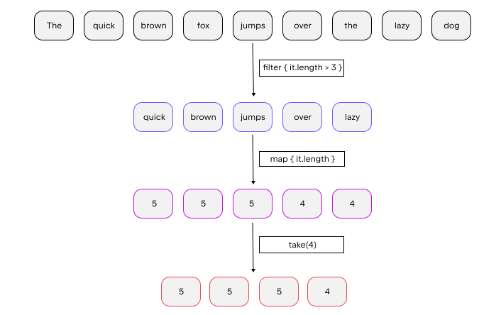
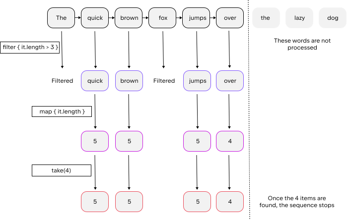

集合操作概览
Kotlin 标准库提供了丰富多样的函数，用于对集合进行操作。其中包括获取或添加元素等简单操作，以及搜索、排序、过滤、转换等更复杂的操作。
扩展函数和成员函数
集合操作在标准库中以两种方式声明：集合接口的成员函数，以及扩展函数。
成员函数定义了对集合类型至关重要的操作。例如，Collection 包含用于检查其是否为空的函数 isEmpty()；List 包含用于按索引访问元素的函数 get()，以此类推。
当你实现集合接口时，必须实现其成员函数。为了更方便地创建新的实现，请使用标准库中提供的集合接口的骨架实现：AbstractCollection、AbstractList、AbstractSet、AbstractMap 及其可变版本。
其他集合操作被声明为扩展函数。这些包括过滤、转换、排序以及其他集合处理函数。
常用操作
只读和可变集合 均支持常用操作。常用操作可分为以下几类：
本页所述的操作会返回结果，且不会影响原始集合。例如，过滤操作会生成一个新集合，其中包含所有符合过滤谓词的元素。此类操作的结果应存储在变量中，或以其他方式使用，例如传递给其他函数。
fun main() {
//sampleStart
val numbers = listOf("one", "two", "three", "four")
numbers.filter { it.length > 3 } // `numbers` 没有任何变化，结果丢失
println("numbers are still $numbers")
val longerThan3 = numbers.filter { it.length > 3 } // 结果存储在 `longerThan3` 中
println("numbers longer than 3 chars are $longerThan3")
//sampleEnd
}对于某些集合操作，可以指定目标对象。目标是一个可变集合，函数会将操作结果追加到该集合中，而不是将其作为新对象返回。对于需要指定目标的操作，有专门的函数，其名称带有 To 后缀，例如 filterTo() 代替 filter() 或 associateTo() 代替 associate()。这些函数将目标集合作为额外参数传入。
fun main() {
//sampleStart
val numbers = listOf("one", "two", "three", "four")
val filterResults = mutableListOf<String>() //目标对象
numbers.filterTo(filterResults) { it.length > 3 }
numbers.filterIndexedTo(filterResults) { index, _ -> index == 0 }
println(filterResults) // 包含这两项运算的结果
//sampleEnd
}
为了方便起见，这些函数会将目标集合直接返回，因此您可以在函数调用的相应参数中直接创建该集合：
fun main() {
val numbers = listOf("one", "two", "three", "four")
//sampleStart
// 将数字直接过滤到一个新的哈希集合中，
// 从而消除结果中的重复项
val result = numbers.mapTo(HashSet()) { it.length }
println("distinct item lengths are $result")
//sampleEnd
}具有目标参数的函数可用于过滤、关联、分组、展平及其他操作。有关目标操作的完整列表，请参阅 Kotlin 集合参考。
写入操作
对于可变集合，还存在会改变集合状态的写入操作。此类操作包括添加、删除和更新元素。写入操作列于写入操作以及列表特有的操作和映射特定操作的相应章节中。
对于某些操作，存在一对用于执行相同操作的函数：一个函数就地应用该操作，另一个则将结果作为独立的集合返回。例如，sort() 就地对可变集合进行排序，因此其状态会发生变化；sorted() 则创建一个新集合，其中包含按排序顺序排列的相同元素。
fun main() {
//sampleStart
val numbers = mutableListOf("one", "two", "three", "four")
val sortedNumbers = numbers.sorted()
println(numbers == sortedNumbers) // false
numbers.sort()
println(numbers == sortedNumbers) // true
//sampleEnd
}集合转换操作
Kotlin 标准库提供了一组用于集合变换的扩展函数。这些函数根据给定的变换规则，基于现有集合构建新的集合。在本页中，我们将概述可用的集合变换函数。
Map
映射转换会根据对另一个集合中元素应用函数的结果来创建一个集合。基本的映射函数是 map()。它将给定的 lambda 函数应用于后续的每个元素，并返回 lambda 结果的列表。结果的顺序与原始元素的顺序相同。若要应用一种额外将元素索引作为参数的转换，请使用 mapIndexed()。
fun main() {
//sampleStart
val numbers = setOf(1, 2, 3)
println(numbers.map { it * 3 })
println(numbers.mapIndexed { idx, value -> value * idx })
//sampleEnd
}如果变换对某些元素的结果为 null，你可以通过调用 mapNotNull() 函数代替 map()，或者调用 mapIndexedNotNull() 代替 mapIndexed()，从而从结果集合中过滤掉 null。
fun main() {
//sampleStart
val numbers = setOf(1, 2, 3)
println(numbers.mapNotNull { if ( it == 2) null else it * 3 })
println(numbers.mapIndexedNotNull { idx, value -> if (idx == 0) null else value * idx })
//sampleEnd
}转换映射时，你有两种选择：转换键值而不改变值，或者反之。要对键应用给定的转换，请使用 mapKeys()；而 mapValues() 则用于转换值。这两个函数都使用以映射条目为参数的转换，因此你可以同时操作其键和值。
fun main() {
//sampleStart
val numbersMap = mapOf("key1" to 1, "key2" to 2, "key3" to 3, "key11" to 11)
println(numbersMap.mapKeys { it.key.uppercase() })
println(numbersMap.mapValues { it.value + it.key.length })
//sampleEnd
}Zip
拉链变换是将两个集合中位置相同的元素配对。在 Kotlin 标准库中，这是通过 zip() 扩展函数实现的。
当在集合或数组上调用 zip() 方法，且将另一个集合（或数组）作为参数时，zip() 返回 List 个 Pair 对象。接收者集合的元素是这些成对对象中的第一个元素。
如果两个集合的大小不同，zip() 的结果将取较小那个集合的大小；较大集合的最后几个元素不会被包含在结果中。
zip() 也可以采用中缀形式 a zip b 调用。
fun main() {
//sampleStart
val colors = listOf("red", "brown", "grey")
val animals = listOf("fox", "bear", "wolf")
println(colors zip animals)
val twoAnimals = listOf("fox", "bear")
println(colors.zip(twoAnimals))
//sampleEnd
}你还可以使用一个接受两个参数（接收者元素和参数元素）的转换函数来调用 zip()。在这种情况下，结果 List 包含对接收者和参数元素中位置相同的元素对调用该转换函数后得到的返回值。
fun main() {
//sampleStart
val colors = listOf("red", "brown", "grey")
val animals = listOf("fox", "bear", "wolf")
println(colors.zip(animals) { color, animal -> "The ${animal.replaceFirstChar { it.uppercase() }} is $color"})
//sampleEnd
}当你对 Pair 应用 List 后，可以执行反向转换——解压——将这些配对元素拆分为两个列表：
第一个列表包含原始列表中每个
Pair的第一个元素。第二个列表包含第二个元素。
要解压一个成对元素列表，请调用 unzip()。
fun main() {
//sampleStart
val numberPairs = listOf("one" to 1, "two" to 2, "three" to 3, "four" to 4)
println(numberPairs.unzip())
//sampleEnd
}关联
关联转换允许根据集合元素及其关联的特定值构建映射。在不同的关联类型中，元素可以是关联映射中的键，也可以是值。
基本关联函数 associateWith() 会生成一个 Map，其中原始集合的元素作为键，值则由给定的转换函数根据这些键生成。如果两个元素相等，则映射中仅保留最后一个。
fun main() {
//sampleStart
val numbers = listOf("one", "two", "three", "four")
println(numbers.associateWith { it.length })
//sampleEnd
}若要构建以集合元素作为值的映射，可使用函数 associateBy()。该函数接受一个基于元素值返回键的函数。若两个元素的键相等，则仅保留最后一个元素在映射中。
也可以通过一个值转换函数来调用 associateBy()。
fun main() {
//sampleStart
val numbers = listOf("one", "two", "three", "four")
println(numbers.associateBy { it.first().uppercaseChar() })
println(numbers.associateBy(keySelector = { it.first().uppercaseChar() }, valueTransform = { it.length }))
//sampleEnd
}另一种构建映射的方法是使用函数 associate()，其中键和值都是以某种方式从集合元素生成的。它接受一个 lambda 函数，该函数返回一个 Pair：即对应映射条目的键和值。
请注意，associate() 会生成短暂存在的 Pair 对象，这可能会影响性能。因此，当性能不是关键因素，或者 associate() 比其他选项更合适时，应使用 associate()。
后者的一个示例是：从一个元素中同时生成键和对应的值。
fun main() {
data class FullName (val firstName: String, val lastName: String)
fun parseFullName(fullName: String): FullName {
val nameParts = fullName.split(" ")
if (nameParts.size == 2) {
return FullName(nameParts[0], nameParts[1])
} else throw Exception("Wrong name format")
}
//sampleStart
val names = listOf("Alice Adams", "Brian Brown", "Clara Campbell")
println(names.associate { name -> parseFullName(name).let { it.lastName to it.firstName } })
//sampleEnd
}这里，我们先对一个元素调用一个转换函数，然后根据该函数结果的属性构建一个元组。
展平
如果你需要操作嵌套集合，可能会发现标准库中那些提供对嵌套集合元素进行展平访问的函数非常有用。
第一个函数是 flatten()。你可以将其应用于集合的集合，例如，一个由 Set 组成的 List。该函数返回一个包含所有嵌套集合元素的单一 List。
fun main() {
//sampleStart
val numberSets = listOf(setOf(1, 2, 3), setOf(4, 5, 6), setOf(1, 2))
println(numberSets.flatten())
//sampleEnd
}另一个函数——flatMap() 提供了一种处理嵌套集合的灵活方式。它接受一个将集合元素映射到另一个集合的函数。因此，flatMap() 会返回一个包含所有元素映射结果的单一列表。所以，flatMap() 的行为相当于依次调用 map()（将集合作为映射结果）和 flatten()。
data class StringContainer(val values: List<String>)
fun main() {
//sampleStart
val containers = listOf(
StringContainer(listOf("one", "two", "three")),
StringContainer(listOf("four", "five", "six")),
StringContainer(listOf("seven", "eight"))
)
println(containers.flatMap { it.values })
//sampleEnd
}
字符串表示
若需以可读格式获取集合内容，请使用将集合转换为字符串的函数：joinToString() 和 joinTo()。
joinToString() 根据提供的参数，从集合的元素中构建一个 String。joinTo() 的操作与之相同，但会将结果追加到给定的 Appendable 对象中。
当使用参数的默认值调用这些函数时，其返回结果与在集合上调用 toString() 类似：一个由元素的字符串表示形式组成的 String，这些表示形式以逗号和空格分隔。
fun main() {
//sampleStart
val numbers = listOf("one", "two", "three", "four")
println(numbers)
println(numbers.joinToString())
val listString = StringBuffer("The list of numbers: ")
numbers.joinTo(listString)
println(listString)
//sampleEnd
}要构建自定义字符串表示形式，可以在函数参数 separator、prefix 和 postfix 中指定其参数。生成的字符串将以 prefix 开头，以 postfix 结尾。除最后一个元素外，每个元素之后都会跟一个 separator。
fun main() {
//sampleStart
val numbers = listOf("one", "two", "three", "four")
println(numbers.joinToString(separator = " | ", prefix = "start: ", postfix = ": end"))
//sampleEnd
}对于较大的集合，您可能需要指定 limit——即要包含在结果中的元素个数。如果集合大小超过 limit，则其余所有元素都将被 truncated 参数的单一值替换。
fun main() {
//sampleStart
val numbers = (1..100).toList()
println(numbers.joinToString(limit = 10, truncated = "<...>"))
//sampleEnd
}最后，若要自定义元素本身的表示形式，请提供 transform 函数。
fun main() {
//sampleStart
val numbers = listOf("one", "two", "three", "four")
println(numbers.joinToString { "Element: ${it.uppercase()}"})
//sampleEnd
}Sequence
除了集合之外，Kotlin 标准库还包含另一种类型——序列（Sequence）（Sequence<T>）。与集合不同，序列本身不包含元素，而是在迭代过程中生成元素。序列提供了与 Iterable 相同的功能，但对多步集合处理采用了另一种实现方式。
当对 Iterable 的处理包含多个步骤时，这些步骤会立即执行：每个处理步骤完成后都会返回其结果——一个中间集合。后续步骤则基于该集合执行。相比之下，Sequence 的多步处理在可能的情况下会延迟执行：只有在请求整个处理链的结果时，才会进行实际计算。
运算执行的顺序也不同：Sequence 会对每个元素依次执行所有处理步骤。而 Iterable 则是先对整个集合完成每个步骤，然后再进行下一步。
因此，Sequence 让你无需构建中间步骤的结果，从而提升了整个集合处理链的性能。然而，Sequence 的惰性特性会带来一些开销，在处理较小的集合或进行较简单的计算时，这种开销可能相当显著。因此，你应综合考虑 Sequence 和 Iterable，并根据具体情况决定哪种方式更合适。
构造
基于元素
要创建一个 Sequence，请调用 sequenceOf() 函数，并将元素作为其参数传入。
val numbersSequence = sequenceOf("four", "three", "two", "one")来自可迭代对象
如果你已经有一个 Iterable 对象（例如 List 或 Set），可以通过调用 asSequence() 从中创建一个序列。
val numbers = listOf("one", "two", "three", "four")
val numbersSequence = numbers.asSequence()
来自函数
创建序列的另一种方法是使用一个计算其元素的函数来构建它。要基于一个函数构建序列，请将该函数作为参数调用 generateSequence()。可选地，你可以将第一个元素指定为显式值或函数调用的结果。当提供的函数返回 null 时，序列的生成将停止。因此，下例中的序列是无限的。
fun main() {
//sampleStart
val oddNumbers = generateSequence(1) { it + 2 } // `it` 是前一个元素
println(oddNumbers.take(5).toList())
//println(oddNumbers.count()) // 错误：该序列是无穷的
//sampleEnd
}要使用 generateSequence() 创建一个有限序列，请提供一个在返回你需要的最后一个元素后返回 null 的函数。
fun main() {
//sampleStart
val oddNumbersLessThan10 = generateSequence(1) { if (it < 8) it + 2 else null }
println(oddNumbersLessThan10.count())
//sampleEnd
}基于片段
最后，有一个函数可以让你逐个生成 Sequence 元素，或者以任意大小的块为单位生成——即 sequence() 函数。该函数接受一个包含 yield() 和 yieldAll() 函数调用的 lambda 表达式。这些函数会向 Sequence 消费者返回一个元素，并暂停 sequence() 的执行，直到消费者请求下一个元素为止。yield() 接受单个元素作为参数；yieldAll() 可以接受一个 Iterable 对象、一个 Iterator 或另一个 Sequence。yieldAll() 的 Sequence 参数可以是无限的。但是，此类调用必须是最后一个：所有后续调用都不会被执行。
fun main() {
//sampleStart
val oddNumbers = sequence {
yield(1)
yieldAll(listOf(3, 5))
yieldAll(generateSequence(7) { it + 2 })
}
println(oddNumbers.take(5).toList())
//sampleEnd
}序列操作
根据其状态要求，序列操作可分为以下几类：
无状态操作无需状态，并独立处理每个元素，例如
map()或filter()。无状态操作也可能需要少量恒定的状态来处理一个元素，例如take()或drop()。有状态操作需要大量状态，通常与 Sequence 中的元素数量成正比。
如果一个序列操作返回另一个序列，且该序列是惰性生成的，则该操作称为中间操作。否则，该操作称为终结操作。终结操作的示例包括 toList() 或 sum()。序列元素只能通过终结操作获取。
序列可以被多次迭代；不过，某些序列的实现可能会限制自身只能被迭代一次。这一点会在其文档中明确说明。
序列处理示例
让我们通过一个示例来看看 Iterable 和 Sequence 之间的区别。
可迭代对象
假设你有一个单词列表。下面的代码会过滤出长度超过三个字符的单词，并打印出其中前四个单词的长度。
fun main() {
//sampleStart
val words = "The quick brown fox jumps over the lazy dog".split(" ")
val lengthsList = words.filter { println("filter: $it"); it.length > 3 }
.map { println("length: ${it.length}"); it.length }
.take(4)
println("Lengths of first 4 words longer than 3 chars:")
println(lengthsList)
//sampleEnd
}运行此代码时，你会发现 filter() 和 map() 函数的执行顺序与它们在代码中的出现顺序一致。首先，你会看到针对所有元素的 filter:，接着是针对过滤后剩余元素的 length:，最后是最后两行的输出。
列表处理的过程如下：

Sequence
现在让我们用 Sequence 重写相同的代码：
fun main() {
//sampleStart
val words = "The quick brown fox jumps over the lazy dog".split(" ")
//将列表转换为序列
val wordsSequence = words.asSequence()
val lengthsSequence = wordsSequence.filter { println("filter: $it"); it.length > 3 }
.map { println("length: ${it.length}"); it.length }
.take(4)
println("Lengths of first 4 words longer than 3 chars")
// 终结操作：将结果作为列表获取
println(lengthsSequence.toList())
//sampleEnd
}该代码的输出结果表明，filter() 和 map() 函数仅在构建结果列表时才会被调用。因此，你首先会看到文本行 "Lengths of.."，随后 Sequence 的处理才会开始。请注意，对于过滤后剩余的元素，在过滤下一个元素之前会先执行 map 操作。当结果大小达到 4 时，处理会停止，因为这是 take(4) 可能返回的最大值。
序列处理过程如下：

在此示例中，元素的惰性处理以及在找到四个项目后停止处理，与使用列表方法相比，减少了操作次数。